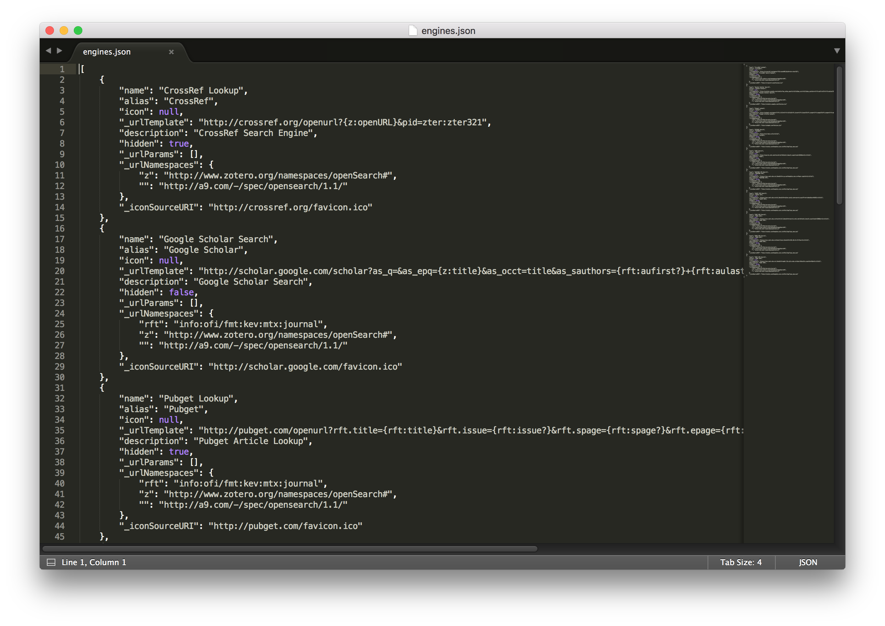

本文被少数派精选：点此查看
Zotero 是优秀的免费开源个人知识管理工具，一般用于管理学术文献，其以跨 macOS、Windows、Linux 三大平台、强大易用的功能闻名于学术圈。如果你是新生或者还未使用文献管理工具，如果你需要知识管理工具，Zotero 可能是你最好的选择之一。关于 Zotero 的使用教程数不胜数，但本文所讲的问题「如何添加文章（文献）检索引擎」任何其他教程都没有给出解决方案，我也是探索良久才得出解决办法。
添加列表中没有的检索引擎，请在浏览器中访问检索引擎网页，并从 Zotero 的“定位”菜单中，选择“添加”。但崩溃的是按照此提示的操作，无法添加检索引擎。

添加教程
从 Zotero 首选项 -> 高级 -> 文件和文件夹 打开数据库文件 ，再打开控制检索引擎的 locate/engines.json 文件。如下图所示，CrossRef Lookup、Google Scholar Search、Pubget Lookup 是默认的三个检索引擎。那么如何添加新的检索引擎，比如知网？

以添加知网检索引擎为例
可以看到，上图中三对 {} 括号中的代码代表着三个默认的检索引擎。添加其他检索引擎只需添加类似代码。下文所示代码是知网引擎，在指定位置添加半角逗号以后，将代码复制到自己的 engines.json 文件中保存即可。重新打开 Zotero 即可发现知网检索引擎已被添加。
"_iconSourceURI": "http://pubget.com/favicon.ico"
}, 此处要加英文（半角）逗号，然后从下面开始复制并添加文末位置
{
"name": "CNKI Search",
"alias": "CNKI",
"icon": null,
"_urlTemplate": "http://search.cnki.net/kns/brief/Default_Result.aspx?code=SCDB&kw={z:title}",
"description": "CNKI",
"hidden": true,
"_urlParams": [],
"_urlNamespaces": {
"rft": "info:ofi/fmt:kev:mtx:journal",
"z": "http://www.zotero.org/namespaces/openSearch#",
"": "http://a9.com/-/spec/opensearch/1.1/"
},
"_iconSourceURI": "http://static.wanfangdata.com.cn/wfks/img/logo_new.png"
}
对于 IP 用户，可直接添加知网、万方、维普等检索引擎，就可以无忧无虑地下载文献。但对于使用学校代理的用户，需要更改 _urlTemplate。添加其他检索引擎事实上也只需重点修改 _urlTemplate 中的搜索网址。
如何确定搜索网址
那么如何确定 _urlTemplate 中的搜索网址？以万方为例：假设我们在万方搜索 唐小筑，网址是这样的形式 http://s.wanfangdata.com.cn/Paper.aspx?q=唐小筑&f=top，注意到其中 唐小筑 即为我们的搜索目标， 而参数 {z:title} 代表着 Zotero 中条目名称，那么 _urlTemplate 中的搜索网址就应该是：
http://s.wanfangdata.com.cn/Paper.aspx?q={z:title}&f=top
总结
Zotero 是开源应用，每一个功能对应的文件都可自行修改，但大部分人应该跟我一样，几乎不懂编程，但也不要对此恐惧。遇到问题也不妨试着找找这个问题对应功能的控制文件，无论是模仿修改还是向其他人求教都会有所帮助。
若对 Zotero 的使用有疑问欢迎讨论……
本文应用版本：
Zotero 5.0.34.6 for macOS

扫一扫即可关注微信公众号